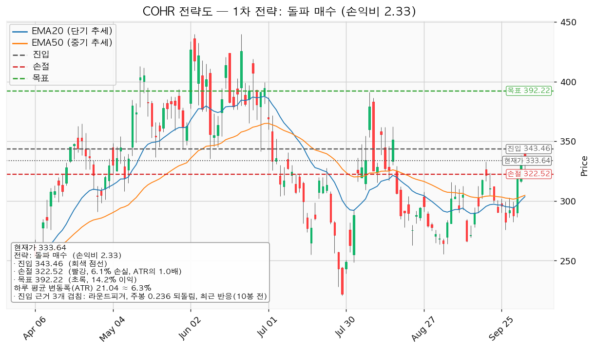
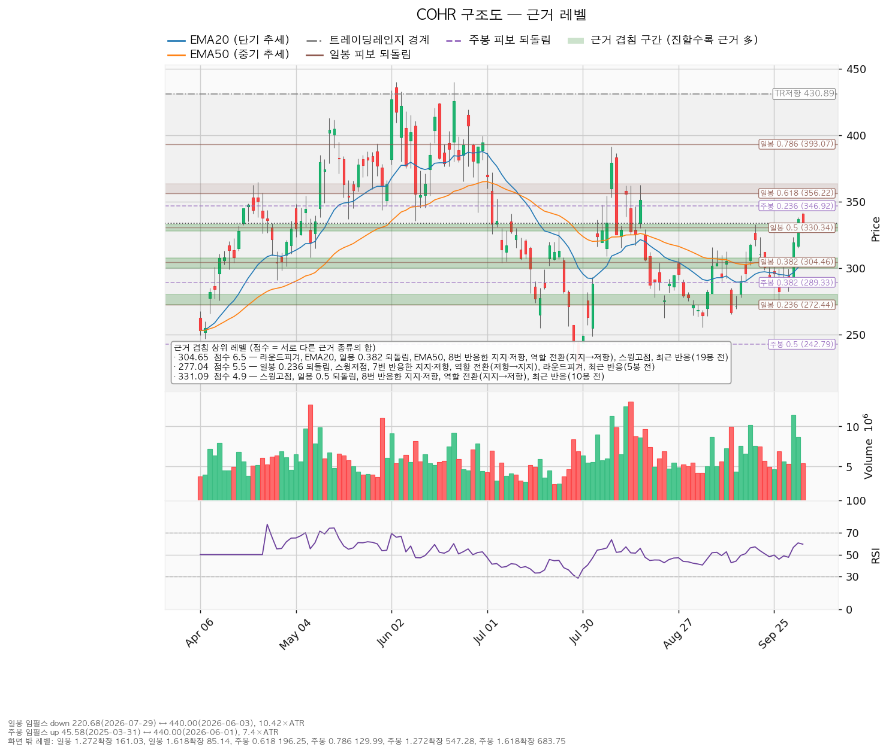
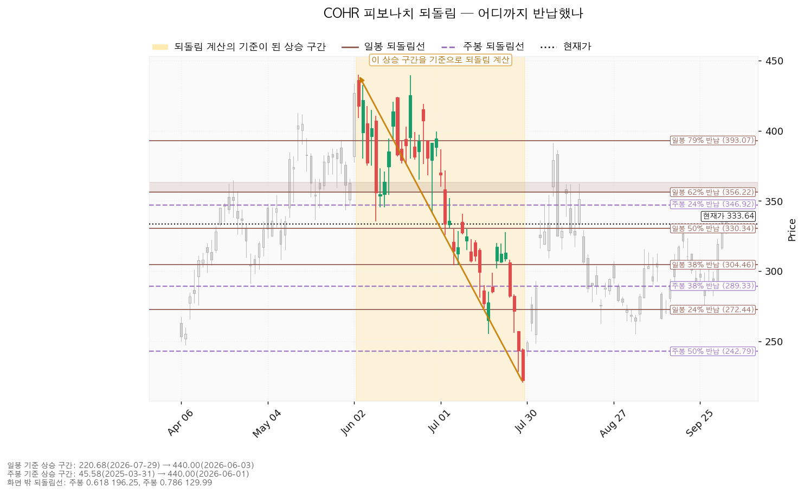
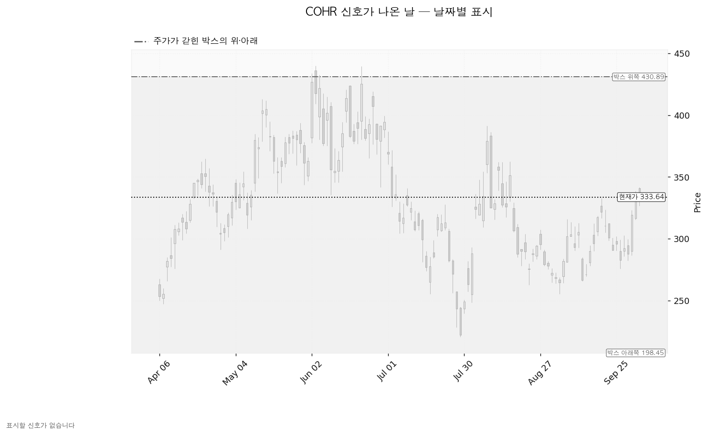

코히어런트(COHR)는 데이터센터·통신망에 들어가는 광트랜시버와 레이저, 화합물 반도체 소재를 만드는 미국 기업입니다.
| 구분 | 가격 | 판정 방식 | 현재 상태 | 현재가 333.64달러(10-05 종가) 대비 |
|---|---|---|---|---|
| 회복선 (매수) | 343달러 | 일봉 종가로 넘으면 진입 | 회복 대기 | +2.94% (0.47 ATR) |
| 집행 손절 | 323달러 | 장중 저가로 닿으면 전량 매도 (손절) — 343달러 진입이 성립한 경우에만 유효, 미진입 상태에서는 의미 없음 | 미진입 | -3.33% |
| 관망 종료 기준 | 300달러 | 일봉 종가 이탈 시 매수 계획 종료 — 새 리포트 대기 | 유지 중 | -10.08% (1.60 ATR) |
| 확인선 (상승 확정) | 392달러 | 일봉 종가 돌파 후 되돌림 지지 확인 | 미돌파 | +17.56% (2.78 ATR) |
| 폐기선 (구조) | 198달러 | 이탈 후 3거래일 내 회복 실패(또는 177달러 아래 종가) + 반등에서 저항 확인 — 실무상 작동하지 않음 | 유지 중 | -40.52% (6.43 ATR) |
| 항목 | 돌파 매수 |
|---|---|
| 엣지 | 모멘텀, 돌파 확인형(가중치 1.0) — 저항을 돌파하면 그 방향이 이어진다는 전제. 자주 틀리고 소수가 크게 맞는 유형(일반적 성격이며 이 엔진에서 측정한 값이 아닙니다) |
| 진입 | 343달러 일봉 종가 돌파 — 근거 2개 겹침: 라운드피겨 340, 주봉 24% 되돌림, 10봉 전 반응 (구간 340~347) |
| 집행 손절 | 323달러 — 328~333달러 겹침 구간 바로 아래. 진입가 대비 -6.10%, 1.0 ATR |
| 목표 | 392달러에서 전량 매도 (목표 도달) — 스윙고점(08-07 391.37), 일봉 79% 되돌림, 40봉 전 반응 (구간 391~393). 진입가 대비 +14.20% |
| 손익비 | 1:2.33 (손절 1.0 ATR). 구조적 손절 기준 손익비는 엔진이 따로 내지 않았고, 이 손절이 이미 겹침 구간 아래 구조 손절이라 같은 값으로 봅니다 |

선정 이유는 손익비 1:2.33 × 돌파 확인형 × 진입 근거 겹침이며, 상대강도·거래량 배수 1.15배(지수 대비 20일 초과수익 +17.65%, 최근 5일 최대 거래량 1.64배)가 곱해졌습니다. 316~320달러 되돌림 매수가 손익비(1:3.22)는 더 크지만 선취형이라 구조가 아직 증명되지 않았습니다. 진입 근거는 모멘텀이고 집행은 레인지 규칙(구조 아래 손절, 392달러 전량 매도, 트레일링 없음)이며, 진입~목표가 2.32 ATR이나 분할하면 전 구간 손익비가 1:2.33에서 1:1.52로, 1차 매도 뒤 하한은 1:0.35로 내려가 단일 매도로 둡니다. 392달러는 확인선과 같은 가격이므로 막히고 되밀리면 그 자리가 매도 자리였고, 일봉 종가로 넘고 되돌림에서 지켜지면 상승 확정으로 보고 새 셋업을 잡습니다(박스 상단 431달러는 그 위 맥락). 현재가는 저항 아래에 붙어 있어 지금 사는 것은 추격 비권장이고, 되돌림이 오면 대기 좌표는 316~320달러(스윙고점 315.70·라운드피겨 320)이며 5봉 뒤 이평 투영치는 EMA20 303.62→315.44, EMA50 304.72→309.96입니다 — 현재가가 그대로 유지될 경우의 이평선 위치이지 가격 예측이 아닙니다. 그 자리에 닿으면 매수가 아니라 재분석합니다.
① 관찰 — 진입 후 일봉 종가가 343달러 아래로 마감. 되돌아 올라오면 속임수 하락일 수 있어 아직 무효가 아닙니다. 추가 매수 없이 집행 손절은 그대로 둡니다. ② 경고 — 이탈 후 3거래일 안에 343달러를 종가로 회복하지 못함, 또는 그 전에 일봉 종가가 322달러 아래로 마감(하루 평균 변동폭의 1배만큼 더 밀림) — 둘 중 먼저 오는 쪽. 레인지로 되돌아갈 가능성이 우세해진 상태이며, 가격 조건은 집행 손절 323달러와 겹쳐 실제로는 장중 손절이 먼저 작동합니다. ③ 무효 — 반등이 343달러에서 막히고 그 아래로 되밀림(지지가 저항으로 전환). 보유분 전량 매도 (시나리오 폐기). 집행 손절 323달러는 이 판정과 무관하게 작동하고, 장중 일시 이탈은 어느 단계에도 해당하지 않습니다. 논지 무효화: 11-05 실적에서 다음 해 주당순이익 컨센서스가 90일 전 수준 12.52달러 아래로 내려가거나 영업현금흐름이 직전 7,951만 달러보다 나빠지면 판단을 접습니다.
| 가격대 | 겹치는 근거 | 역할 |
|---|---|---|
| 391~393달러 | 스윙고점, 일봉 79% 되돌림, 40봉 전 반응 | 확인선·목표 |
| 356~360달러 | 일봉 62% 되돌림, 라운드피겨 360, 34봉 전 반응 | 진입~목표 사이 저항 |
| 340~347달러 | 라운드피겨 340, 주봉 24% 되돌림, 10봉 전 반응 | 회복선(진입) |
| 328~333달러 | 스윙고점 2개, 일봉 50% 되돌림, 8번 반응한 지지·저항, 역할 전환(지지→저항), 10봉 전 반응 | 현재가 바로 아래, 손절 위 |
| 316~320달러 | 스윙고점, 라운드피겨 320, 19봉 전 반응 | 되돌림 대기 좌표 |
| 300~307달러 | EMA20, EMA50, 스윙고점, 일봉 38% 되돌림, 8번 반응한 지지·저항, 역할 전환(지지→저항), 라운드피겨 300 | 가장 두꺼운 아래쪽 지지, 관망 종료 기준 |
| 272~280달러 | 일봉 24% 되돌림, 스윙저점(09-28 275.79), 7번 반응한 지지·저항, 역할 전환(저항→지지), 라운드피겨 280 | 그 아래 지지 |
328~333달러는 4월부터 8번 반응한 가격대로, 지지였다가 저항으로 바뀐 자리를 10-01~10-02에 넘어섰고 10-05 장중 326.46달러까지 밀렸다가 그 위로 마감했습니다. 박스는 751봉 중 40·90·180봉을 시험해 가격이 경계 안에 머문 비율이 가장 높은 180봉(198~431달러, 97.8%, 폭 11.05 ATR)으로 판정됐습니다. 직전 180봉 구간(72~199달러)을 위로 벗어나 이 박스로 들어왔으므로 재매집과 분산 양쪽이 열려 있고, 박스 안쪽은 중립입니다 — 지지 테스트 6회(02-05 저가 175.24 거래량 2.19배, 03-06 230.10 1.15배, 03-17 230.20 1.03배, 03-30 215.55 0.83배, 04-02 231.79 0.55배, 07-29 220.68 1.50배)에서 매도 거래량은 감소 추세지만 저점은 평탄하고 상승봉 대 하락봉 거래량비는 0.95입니다.

되돌림: 일봉은 440.00(06-03)→220.68달러(07-29) 하락분의 50% 330.34 / 62% 356.22 / 79% 393.07이며 현재가는 50%와 62% 사이입니다. 주봉은 45.58(2025-03-31)→440.00달러 상승분의 24% 346.92 아래, 38% 289.33 위에 있습니다.

신호일: 180봉 박스 기준으로 속임수 하락·상승 같은 신호가 난 날은 없고, 국면 후보는 미정입니다.

(a) 후행 PER 80.98배(주당순이익 4.12달러) / 선행 23.75배(14.05달러) — 이익 성장률 전망이 당해 +67.92%, 다음 해 +49.1%라 두 배수가 벌어져 있습니다. (b) 애널리스트 23명 매수 의견, 목표 최저 280.00(-16.08%) / 평균 412.52(+23.64%) / 최고 500.00달러(+49.86%)이며 현재가는 최저 목표 위, 분포의 아래쪽에 있습니다. (c) 다음 해 추정치는 90일 +12.2%, 30일 +0.7%(당해 +15.3% / +0.1%)이고 가격은 52주 고점 대비 -24.17%라 배수 수축입니다. 상향은 최근 30일 멈췄고, CLI 뉴스는 종목 단위 조회를 하지 않아 11-05 실적 말고는 재평가 계기를 대지 못합니다. (d) 2026-06-30 결산 기준 영업현금흐름 +7,951만 달러, 잉여현금흐름 -10억 3,057만 달러, 설비투자 11억 1,008만 달러(+151.8%) — 영업 흑자에 설비투자가 앞선 적자이므로 투자 회수 속도가 확인 항목입니다. (e) 평균 목표의 다음 해 이익 기준 내재 배수는 29.37배, 셋업 목표 392달러는 27.92배로 현재 23.75배보다 높아, 두 목표 모두 상승분이 배수 확장에서 와야 합니다. 셋업(수 주)과 컨센서스(12개월)는 시계가 다릅니다.
2026-11-05 분기 실적 — 다음 해 주당순이익 컨센서스 14.05달러 유지 여부, 영업현금흐름 7,951만 달러 대비 개선, 설비투자 11억 1,008만 달러의 회수 속도를 봅니다. 343달러에서 진입하면 수 주 시계 안에 이 실적이 들어오므로, 실적 다음 날 시가가 323달러 아래에서 열리면 손절은 그 시가에 체결됩니다. 다음 실적 이후 2~3개 분기의 역풍은 확인할 자료가 없습니다.
장부에 COHR 체결 기록이 없고 관심종목(미보유)이라 전략도에 평단선은 없습니다. 계좌 평가액 139,498,400원(09-21 등록값)의 1% 손실 한도를 손절 폭 6.10%로 역산하면 계좌의 16.4%가 나와 한 종목 상한 13%로 제한합니다 — 18,134,792원(환율 1,340.60원 기준 약 13,527달러, 343달러에 39주)이며, 39주 기준 손절 시 손실은 1,094,814원(계좌의 0.78%)입니다. 하루 평균 변동폭은 주가의 6.31%로 8% 아래지만 손절 폭이 1.0 ATR이라, 평균 하루 등락 한 번이면 논지와 무관하게 체결될 수 있습니다. 판정: 조건 대기 — 343달러 일봉 종가 돌파 시 매수, 손익비 1:2.33, 조건 점검 7/9(미달: 이동평균 정배열·상대강도선 신고가).
ATR = 하루 평균 변동폭. EMA20·EMA50 = 최근 20일·50일 흐름을 반영한 평균선. PER = 주가 ÷ 주당순이익. 되돌림 = 직전 상승·하락분의 몇 %를 반납·회복했는지로 보는 가격대. 속임수 하락 = 박스 경계를 잠깐 벗어났다가 곧바로 되돌아오는 움직임. 손익비 = 손실 폭 대비 이익 폭.